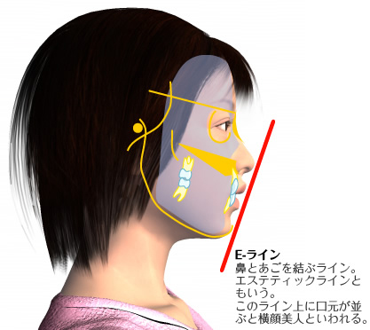
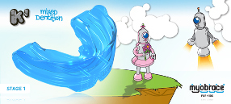

当院の「こどもの矯正治療」Kids Ortho
佐賀県鳥栖市の歯医者「みらい歯科・こども矯正歯科」では、小児予防矯正・こどもの矯正治療に力を入れています。成長期にあるこどもの時期に治療を行うことで、多くのメリットを得られるからです。こちらでは、当院における「こどもの矯正治療」についてご紹介します。
歯科医院によって治療方針が異なります
「歯医者さんによって、治療法や方針が全然違う」と思われる方は多いのではないでしょうか。これは歯科医療にかぎったことではありません。治療法や方針にはさまざまな選択肢があり、歯科医院、さらには歯科医師ごとに考え方が異なることでどうしても違う意見が生まれるのです。

当院では6～7歳ころからはじめる「早期矯正治療」をおすすめしています。それは、早く治療をしたほうが、歯並びはもちろん、しっかりした顔つきも得られると考えるからです。しかし歯科医院によっては、「おとなの歯が生えそろってから治療をはじめたほうがいい」と言われるところも少なくありません。
なぜなら成長が完了してから治療をはじめれば、成長の度合いを見込む必要がなく、治療の経過を予測しやすいからです。たしかに成長の度合いには個人差があるため、早期矯正治療では予測が立てにくいのも事実です。しかし当院では、それを上回るメリットがあると考え、早期矯正治療・こどもの矯正治療をおすすめしています。
最終的に歯科医院を決めるのは、お母さま・お父さまです。さまざまな意見をしっかり聞き、納得できる医院を選びましょう。
各種矯正装置の紹介
MRCトレーナー「Myobrace」
お口まわりや飲み込む際に関わる筋肉・舌を正しく鍛え、歯並びを改善するために用いるマウスピース型の装置です。歯並びはお口まわりの筋肉や舌の位置、動きなどに影響を受けるため、多くの場合これらを鍛えれば歯並びは改善されます。逆に筋肉が鍛えられていないと、固定式ワイヤーなどで歯並びを整えても後戻りしてしまうのです。
MRCトレーナーで筋肉や舌の位置や動きを矯正すれば、歯並びと筋肉が調和し歯並びが安定します。当院では筋矯正が矯正治療の主軸であると考え、訓練に力を入れています。効果を得るために、当院スタッフの指導に従って訓練に取り組みましょう。
※当院は佐賀県内で2医院しかない、MRCトレーナー・MYOBRACEの正式メンバークリニックです。
固定式ワイヤー装置
もっとも一般的な矯正装置です。歯の表面にブラケットという小さな装置を取り付け、これにワイヤーを通して歯を引っ張り、直接力をかけて正しい位置に動かしていきます。
おとなの矯正治療では、主にこの装置が使用されますが、はじめは痛みが出たり、歯磨きがしにくかったりすることがあるため、本人の強い意志が欠かせません。当院はこの装置をこども矯正ではなるべく使用しませんが、メリットも多いため状況により一時的に使うこともあります。
急速拡大装置
上のあごをしっかり拡げたい場合に使用する装置です。上あごが広がると、鼻の横にある空間「鼻腔」の底も広がります。その結果歯がきちんと並ぶスペースを確保でき、鼻呼吸もしやすくなります。
さらに睡眠時無呼吸の予防にもつながるなどのメリットあるため、当院でとくにおすすめしている治療法です。
MUHシールド
受け口（反対咬合）を改善するために用いるマウスピース型の装置です。通常早期矯正治療は6～8歳ころから開始しますが、受け口だけはそれより早く、3～4歳ころに開始するほうがよい結果を得られます。その年齢のこどもは複雑な装置が使えないため、この装置を用いて上下のあごや筋肉のバランスを整えて、受け口の改善を図るのです。
なおこの時期に治療をせず放置すると、受け口が重症化し、より複雑な治療が必要になるケースもあります。
床拡大装置
こどもの矯正治療の流れ
佐賀県鳥栖市の歯医者「みらい歯科・こども矯正歯科」では、こどもの早期矯正治療（I期治療）において、歯並びが乱れた原因を排除しながら、取り外せる装置を使って治療を進めます。この装置は食事や歯磨き、スポーツなどの際には外せるため、固定式の装置と比べて快適です。
歯並びが乱れた原因には、舌やお口まわりの筋肉・組織が正しく動いていないこと、また口呼吸が挙げられます。そこで専用の装置を用いて、舌やお口まわりの筋肉を鍛える訓練をしながら口呼吸を改善する「筋機能矯正」を実施。それによって歯並びを改善するとともに、よい状態を長く維持できるようになります。
こちらでは、当院におけるこどもの矯正治療の流れをご紹介します。
こどもの早期歯列矯正治療（I期治療）の流れ
- Stage 1悪習癖除去
-

期間の目安： 3～6カ月
まず、「MRCトレーナー」（上へリンク）というマウスピース型の矯正装置を使って、お口まわりの筋肉や舌の悪いクセを改善します。併せて、口呼吸から鼻呼吸へ転換する訓練も実施します。
装置はあくまでも「補助」の道具です。「お口をぽかんと開けない」「鼻で呼吸をする」など自分自身で意識する努力が必要です。
- Stage 2狭いあごの拡大やあごの位置の修正
-
床拡大装置（取り外し式）
急速拡大装置（固定式）
期間の目安： 床拡大装置 6～10カ月
急速拡大装置 6カ月口呼吸などの悪いクセが改善しはじめたら、必要に応じて、装置を使いあごを拡げていきます。取り外し式の装置の場合、1日14時間以上の装着が必要です。状況に応じて、固定式の装置を使うケースもあります。
あごが拡がると、鼻の通りがよくなって鼻呼吸がしやすくなります。
- Stage 3歯並びの調整
-
期間の目安： 6～10カ月
舌を正しい位置に導き、正しい飲み込み方の訓練をしながら歯並びを整えていきます。併せて、鼻呼吸がさらにしっかりできるよう訓練します。これらを行うことで、歯並びは自然に整っていくのです。
- Stage 4保定
-
期間の目安： ●～●カ月
おとなの歯が生えて来る前の準備が整いました。後は保定用のMRCトレーナーや床型保定装置を使いながら、生え替わりを待ちます。すべての歯が永久歯に生え替わり、きれいに並んでいれば治療は終了です。
さらに、歯並びをよりよくしたいという場合には、おとなの矯正治療（II期治療）へ移行します。矯正治療では、自分の歯並び・顔つきをよくするためにこども自身が頑張らなくてはなりません。ご家族の方のサポートをお願いいたします。